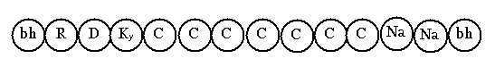
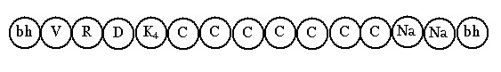
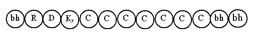
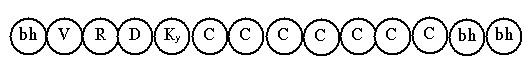
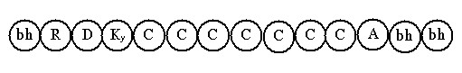
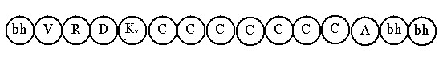

Bài 9 LỘ Ý MÔN THỜI BÌNH NHẬT I. ĐỊNH NGHĨA. Lộ ý môn thời bình nhật là diễn hoạt của ý thức khi nhận cảnh qua lộ ý môn trong thời bình thường. II. PHÂN TÍCH. Quy trình diễn hoạt của ý thức được nêu bày theo 2 cách: lộ ý môn thông thường và lộ ý môn đặc biệt (appanācittavīthi - lộ tâm An chỉ). Lộ ý môn thông thường là tâm lộ diễn hoạt phổ cập trong sinh hoạt tâm thức chúng sanh. Còn lộ ý môn đặc biệt là tâm lộ diễn hoạt do sự tu tiến (bhāvanā) thành đạt được Thiền định (samādhi), Đạo quả (Maggaphala) hoặc chứng đạt Thông lực (Iddhipāda). Lộ ý môn thông thường được phân chia theo hai thời: Thời bình nhật và thời cận tử. Lộ ý môn thông thường thời bình nhật diễn hoạt theo bốn cảnh: Cảnh cực rõ, cảnh rõ, cảnh không rõ và cảnh mơ hồ. Tổng cộng có tất cả là 41 lộ tâm, phân ra như sau: Cảnh cực rõ có 22 lộ A- LỘ Ý MÔN CẢNH RẤT RÕ I. ĐỊNH NGHĨA. Cảnh cực rõ là cảnh hiện bày rõ ràng những chi tiết nhỏ nhặt sắc nét. II. CÁC MÔ THỨC LỘ Ý MÔN CẢNH RẤT RÕ. Tương tự như lộ ngũ môn cảnh rất lớn, dòng tâm thức diễn hoạt qua ý môn cảnh rất rõ cũng có ba mô thức: chót Na cảnh, chót đổng lực và chót hữu phần Khách. a. Lộ ý môn cảnh cực rõ chót Na cảnh. Khi sắc thành tựu hiện tại làm cảnh cho ý thức, đó là chướng ngại cho dòng hữu phần. Tùy theo mức độ chướng ngại và cảnh lực, dòng hữu phần khởi lên từ 1 đến 5 sát-na HPVQ, rồi hữu phần mới bị Rúng động. Nếu cảnh là danh pháp hoặc chế định thì không có HPVQ. Như vậy, mô thức này có được 6 lộ: 1 lộ không HPVQ và 5 lộ có HPVQ. Biểu đồ 1/- Lộ ý môn cảnh rất rõ, chót Na cảnh không HPVQ.  Ký hiệu Ky: Hướng ý môn (manodvāravajjanacitta) Lộ này có được: - Sát-na: 10 sát-na tâm khách (1 sát-na Hướng ý môn, 7 sát-na đổng
lực, 2 sát-na Na cảnh). 2/- Lộ ý môn cảnh rất rõ, chót Na cảnh có 1 HPVQ diễn tiến như sau:  Lộ này có được: - Sát-na: 10 sát-na tâm khách. Bốn lộ còn lại tương tự như lộ trên, chỉ thêm dần mỗi lộ một sát-na HPVQ. b. Lộ ý môn cảnh rất rõ, chót đổng lực. Trong mô thức này, dòng tâm lộ diễn tiến đến sát-na đổng lực thứ 7 thì trở về hữu phần cơ bản. Khi dòng tâm thức nhận danh pháp hoặc chế định làm cảnh thì không cóHPVQ, khi nhận sắc pháp làm cảnh thì có từ 1 đến 7 sát-na HPVQ. Như vậy mô thức này có được 8 lộ. Biểu đồ. 1/- Lộ ý môn cảnh rất rõ, chót đổng lực không HPVQ diễn tiến như sau:  Lộ này có được: - 8 sát-na tâm khách: 1 sát-na Hướng ý môn, 7 sát-na đổng lực. 2/- Lộ ý môn cảnh rất rõ chót, đổng lực có 1 HPVQ diễn tiến như sau:  Lộ này có được: - Sát-na: 8 sát-na tâm khách Sáu lộ còn lại tương tự, chỉ thêm dần mỗi lộ là một sát-na HPVQ. c. Lộ ý môn cảnh rất rõ, chót hữu phần Khách. Ở mô thức cảnh rất rõ chót hữu phần Khách, cũng có 8 lộ như mô thức chót đổng lực. Tức là có 1 lộ không HPVQ, 7 lộ có từ 1 đến 7 HPVQ. Biểu đồ. 1/- Lộ ý môn cảnh rất rõ, chót hữu phần Khách không HPVQ diễn tiến như sau:  Ký hiệu. A: hữu phần Khách. Lộ này có được: - Sát-na: 8 sát-na tâm khách (Hướng ý môn và 7 sát-na đổng lực). 2/- Lộ ý môn cảnh rất rõ, chót hữu phần Khách, có 1 HPVQ diễn tiến như sau:  Lộ này có: Tám sát-na tâm khách, 2 chặng, 3 thứ tâm khách, 4 hạng người, ở 7 cõi vui Dục giới. Sáu lộ còn lại cũng tương tự, chỉ thêm dần mỗi lộ 1 sát-na HPVQ mà thôi. TỔNG KẾT Lộ ý môn cảnh cực rõ thời bình nhật có được 22 lộ: * Chót Na cảnh có 6 lộ: - Không HPVQ: 1 Lộ * Chót Đổng lực có 8 lộ: - Không HPVQ: 1 Lộ * Chót hữu phần Khách có 8 lộ: - Không HPVQ: 1 lộ -ooOoo- Ðầu trang | Mục lục | 01 | 02 | 03 | 04 | 05 | 06 | 07 | 08 | 09 | 10 | 11 | 12 | 13 | 14 | 15 | 16 | 17 | 18 | 19 | 20 | 21 | 22 | 23 | 24 | 25 |